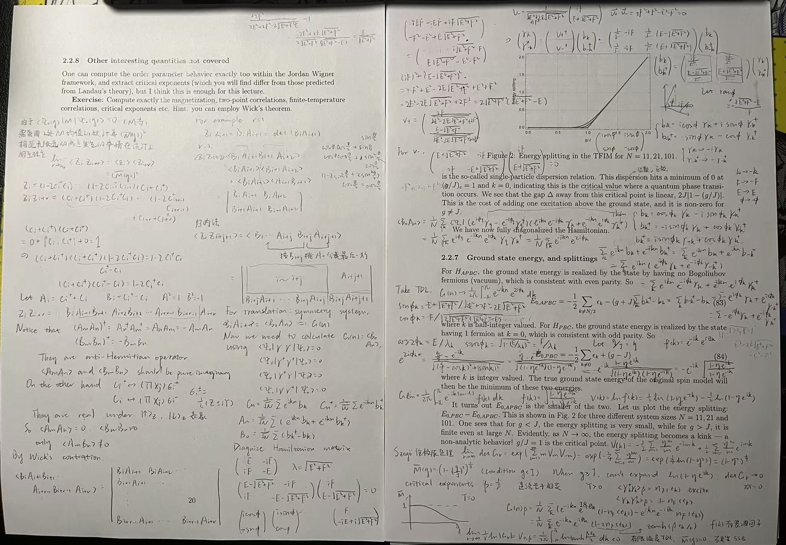
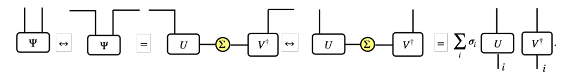
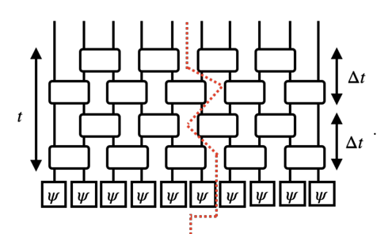
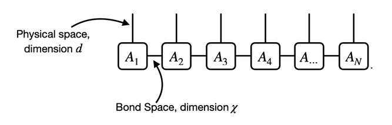
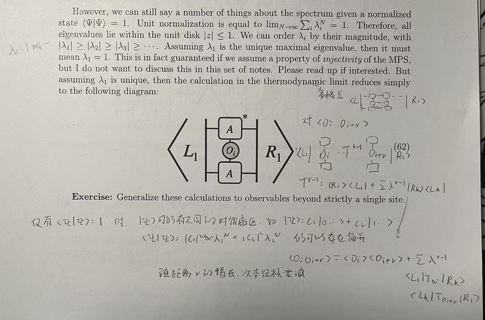
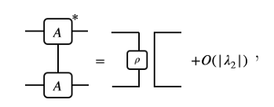

（读书笔记）信息论角度谈量子多体物理
原课程为NUS PC5221，只能在家阴暗的读讲义
很多地方没有抄全讲义，想看原讲义可以联系我
基本概念
TDL：thermadynamic limit，系统规格无穷大的极限，无限体积极限
这个在田崎的统计力学II第436页也有提及。为什么要有这个极限，是因为有限体积下，以Ising模型为例，有个定理说明平均自由能$f_L(\beta,H)$可以对$\beta$和H进行任意次的微分，也即平均磁化m是H的连续函数，任意温度下$m_L(\beta,0)=0$恒成立，也就是不会出现相转移的现象
通常要先取TDL，再取其他任何极限：
考虑两个无相互作用的自旋1/2系统，其中一个外加z方向的磁场，另一个外加$\cos\phi \hat{z}+\sin\phi\hat{x}$的磁场，其中$\phi$是较小的角度，哈密顿量写作
$$H=-J\sum_{i=1}^NZ_i$$
$$H'=-J\sum_{i=1}^N(\cos\phi Z_i+\sin\phi X_i)$$
通过计算哈密顿量本征矢量可以得出这两个系统的基态分别为
$$\ket{\Psi_0}=\ket{\uparrow\uparrow...}\quad\ket{\Psi_0'}=\ket{\uparrow'\uparrow'...}$$
其中$\ket{\uparrow'}=\cos(\phi/2)\ket{\uparrow}+\sin(\phi/2)\ket{\downarrow}$
计算overlap
$$|\braket{\Psi_0|\Psi_0'}|=\cos^N(\phi/2)$$
固定任意小的φ，取TDL后上式为0，所以不能用态的内积去衡量两个系统的相似程度
SSB：基态是简并的，执行一个对称操作之后，从一个基态转为另一个基态（但持有相同的能量）
统计物理模型
自旋1/2系统
定义磁化强度$M=\frac{1}{N}\sum s_i,\quad\braket{M}=\sum P(s) M(s)$，下面为了方便起见只使用后者（平均值），并且不写尖括号
假设系统满足全自旋翻转的Z2对称性，并且假设V(M)光滑解析，那么可以写成偶展开式
$$V(M)=v_0+v_2M^2+v_4M^4+...$$
进一步假设最少个数的非零参数，记$v_2=a(T-T_c)$，为了保持势下有界，再来个$v_4=b>0$，其他的参数均为零，得到
$$V(M)=a(T-T_c)M^2+bM^4$$
这个势表示当温度高于临界温度时，势能是一个向上的U形；当温度小于临界温度时，势能是一个墨西哥帽的截面，此时基态M二重简并，系统是有序相
一维横场Ising模型(1D TFIM)
$$H=-(J\sum_{i=1}^NZ_iZ_{i+1}+g\sum_{i=1}^NX_i)$$
假设周期性边界条件，那么系统具有平移对称性和自旋翻转对称性。反转操作可以由X算符来表述
$$G=\prod_{i=1}^NX_i$$
平移操作更复杂，由多个局部两两swap构成。单个swap算符是这样
$$P_{i,i+1}=\frac{1}{2}(I+X_iX_{i+1}+Y_iY_{i+1}+Z_iZ_{i+1})$$
我们可以具体写出矩阵形式来看出这是SWAP
$I = \begin{pmatrix} 1 & 0 & 0 & 0 \\ 0 & 1 & 0 & 0 \\ 0 & 0 & 1 & 0 \\ 0 & 0 & 0 & 1 \end{pmatrix}$
$\sigma^z \otimes \sigma^z = \begin{pmatrix} 1 & 0 & 0 & 0 \\ 0 & -1 & 0 & 0 \\ 0 & 0 & -1 & 0 \\ 0 & 0 & 0 & 1 \end{pmatrix}$
$\sigma^x \otimes \sigma^x = \begin{pmatrix} 0 & 0 & 0 & 1 \\ 0 & 0 & 1 & 0 \\ 0 & 1 & 0 & 0 \\ 1 & 0 & 0 & 0 \end{pmatrix}$
$\sigma^y \otimes \sigma^y = \begin{pmatrix} 0 & 0 & 0 & -1 \\ 0 & 0 & 1 & 0 \\ 0 & 1 & 0 & 0 \\ -1 & 0 & 0 & 0 \end{pmatrix}$
$$P_{1,2} = \begin{pmatrix} 1 & 0 & 0 & 0 \\ 0 & 0 & 1 & 0 \\ 0 & 1 & 0 & 0 \\ 0 & 0 & 0 & 1 \end{pmatrix}$$
对角线上的元素是代表着两个自旋相同时维持原状，中间交错的1表示自旋不同时发生互换。
最后，平移算符由这些SWAP乘积得到
$$T=\prod_{i=1}^{N-1}P_{i,i+1}$$
由于H,G,T这三个算符两两对易,组成CSCO,我们可以用这三个算符的本征矢来描述态$\ket{E,g,k}$。特别的，
$$T\ket{E,g,k}=e^{i2\pi k/N}\ket{E,g,k}$$
这个叫做quasi-momentum准动量（物性理论还经常考这个）
quasi-momentum在第一布里渊区取值，也即$2\pi\frac{k}{N}\in(-\frac{\pi}{2},\frac{\pi}{2}]$中的整数k点
由于$G^2=1$，所以G的特征值一定是$\pm1$；由于$TrG=0$，所以$\pm1$的特征子空间维度相同，均为$2^{N-1}$（系统总维度为$2^N$）
遗留的问题：对第一布里渊区中整数k所对应的$e^{i2\pi k/N}$特征子空间维度是多少？显式写出这些basis
思考：$g=1$的本征矢可以写作$\ket{s}+\ket{-s}$，$g=-1$的本征矢可以写作$\ket{s}-\ket{-s}$，相当于把s和-s两种自旋进行无损变换得到了上面两种基。而平移算符的本征矢形如$\ket{s}+e^{i2\pi k/N}\ket{Ts}+...+e^{i2\pi (N-1)k/N}\ket{T^{N-1}s}$.将这个傅里叶后的态变为对称形式，也即$\ket{s}+e^{i2\pi k/N}\ket{Ts}+...+e^{i2\pi (N-1)k/N}\ket{T^{N-1}s}\pm(s\leftrightarrow -s)$即可同时成为G的本征矢
考虑自旋相互作用为主要成分，X上的外场为微扰
先考虑零级微扰，g=0，那么基态为自旋全部向上或向下，具有-JN能量；第一激发态是具有一对domain wall，单侧的wall能量从-J到J，所以第一激发态能量是-JN+4J（不随反转区域大小改变）
下面考虑高阶扰动，我们知道二阶扰动能量变化是
$$E_n^{(2)}=\sum_{m\neq n}\frac{\braket{\psi_n^0|H'|\psi_m^0}\braket{\psi_m^0|H'|\psi_n^0}}{E_n^0-E_m^0}$$
这里由于涉及到二重简并，所以要用2x2矩阵来描述（有点像含时微扰那里的东西）
$$I = \begin{pmatrix} a_{\uparrow\uparrow} & a_{\uparrow\downarrow} \\ a_{\downarrow\uparrow} & a_{\downarrow\downarrow} \end{pmatrix}$$
不考虑组合系数时
$$a_{\uparrow\uparrow}\sim\sum_{path}\frac{\braket{\uparrow...|V|e_l}...\braket{e_i|V|\uparrow...}}{(E_0-E_l)...(E_i=E_0)}$$
代表着全上的状态经过V扰动跃迁多次后回到全上的终态。n阶扰动的贡献大致是$g^n$
由于X方向上的外场与Z方向上的翻转可交换，也即
$$G^\dagger VG=V$$
用$G^\dagger VG$替换矩阵元中的V，夹层矢量不变，最外层发生翻转，因此$a_{\uparrow\uparrow}=a_{\downarrow\downarrow}$
再考虑交叉项非对角元。V是由各个局域的X相加而成，也就是说m阶扰动最大包含了m个qubit翻转，所以最小非零阶为n阶。为了展现出指数下降的特征，我们记贡献$(g/J)^N=e^{-cN},c=\ln(J/g)>0$
忽略对角元上能量平移后，微扰矩阵写作
$$\sim\begin{pmatrix} 0 & e^{-cN} \\ e^{-cN} & 0 \end{pmatrix}$$
得到good state也就是G的本征态
$$\ket{\uparrow...}+\ket{\downarrow...}\quad\ket{\uparrow...}-\ket{\downarrow...}$$
两个态被劈裂的能隙是$e^{-cN}$数量级，只要外场与自相互作用相比不大，在系统体积增长时完全可以比4J小，并且在TDL下回归到0，是一个自洽的理论
研究同样在无限体积情况下外场g大小对系统形为的改变：当$g 上述情况虽然是从$V=-g\sum_{i=1}^NX_i$出发的，但我们可以进一步把他推广到更一般的条件。对角元为0意味着V要满足G对称性，而指数压低体现在V必须作用很多次，也就是说V必须是local算符的和（例如$X_iX_{i+1}$）。一个反例是直接拿G做微扰，那么只需要作用一次G就可以达到全qubit翻转的作用，非对角元成分不再会随着系统体积增大而降低，上述讨论失效。这个例子说明了局域性在量子多体以及物质稳定性的重要性。考虑到自然界的作用大多是局域的，我们的例子是合理的 对于不满足对称性G的微扰，能隙无法再被系统体积压低，这相当于是显式对称性破缺，类似于朗道函数中加上odd项$\epsilon_1 M$ 对于上述的基态$\ket{\uparrow...}+\ket{\downarrow...}\quad\ket{\uparrow...}-\ket{\downarrow...}$，我们希望寻找一个序参数（order parameter）去描述是否发生基态简并或者说是相变现象。 首先尝试使用磁化强度M。注意到$G^\dagger MG=-M$，可以算出M在G本征态下的平均值一定为0.由于这里两个基态都是G本征态，所以M的均值恒为0，无法探测对称性破缺现象 如何选择正确的基态？如果我们很早就取了TDL，那么全上和全下的任意线性组合都可以是基态，并且他们会产生任意（不同）的M。正确的做法是先引入一个显式破坏对称性的项进入哈密顿量，找到TDL下本征态，最后再将对称破坏项趋于0. $$\braket{M}(g,\epsilon)=\braket{\Psi_0(g,\epsilon)|M|\Psi_0(g,\epsilon))}$$ $$\bar{M}(g):=\lim_{\epsilon\to 0}\lim_{N\to\infty}\braket{M}(g,\epsilon)$$ 如果这个>0，那么称作铁磁性（Ferromagnetism）；如果=0，那么称作顺磁性（Paramagnetism）。区别这两个相的是临界外场$g_c$ 注：如果交换极限顺序，极限会恒为0. 隧穿现象 在考虑微扰的情况下，全向上自旋和全向下自旋在时间演化的过程中可能发生隧穿，但是时间是随着体积而指数爆炸的，下面来计算 施加外场后，第一激发态和基态变为 $$\ket{+}:=\frac{1}{\sqrt{2}}(\ket{\uparrow}+\ket{\downarrow}),\quad\ket{-}:=\frac{1}{\sqrt{2}}(\ket{\uparrow}-\ket{\downarrow})$$ 其中，每个符号代表着N个同样的自旋体，就不重复写了。那么向上和向下的演化分别是 $$e^{-iHt}\ket{\uparrow}=\frac{1}{\sqrt{2}}(e^{-iE_+t}\ket{+}+e^{-iE_-t}\ket{-})=\frac{1}{\sqrt{2}}e^{-iE_+t}(\ket{+}+e^{i\Delta Et}\ket{-})$$ $$\ket{\downarrow}=\frac{1}{\sqrt{2}}(e^{-iE_+t}\ket{+}-e^{-iE_-t}\ket{-})=\frac{1}{\sqrt{2}}e^{-iE_+t}(\ket{+}-e^{i\Delta Et}\ket{-})$$ 则 $$\begin{align} \braket{\downarrow|e^{-iHt}|\uparrow}&=\frac{1}{2}e^{-iE_+t}(\bra{+}-\bra{-})(\ket{+}+e^{i\Delta Et}\ket{-})\\ &=\frac{1}{2}e^{-iE_+t}(1-e^{i\Delta Et}) \end{align} $$ $$\begin{align} |\braket{\downarrow|e^{-iHt}|\uparrow}|^2&=\sin^2(\frac{\Delta E t}{2}) \end{align}$$ 跃迁概率首次达到1的时间$t_1=\pi/\Delta E$，而根据前面的讨论可以知道，两个态被劈裂的能隙是$e^{-cN}$数量级，反过来也就是说$t_1$随着系统体积的增长而指数爆炸。 现在建立1D TFIM与一套费米子产生湮灭算符之间的联系 首先从单粒子系统开始，注意到 $$\sigma^{\pm}=\frac{1}{2}(Z\pm iY)$$ 是X自旋表象$\ket{\pm}$上的升降算符。注意+是基态，-是激发态。我们还有充当数目算符的投影算符 $$\frac{1}{2}(I-X)$$ 他作用在-上的特征值为1，作用在+上的特征为0 这一套的交换关系正好也满足费米正则反对易关系（CAR），所以拥有完全相同的矩阵表示(算一个就知道了) 但是如果贸然推广到多粒子系统，会出现费米反对易关系与玻色对易关系不兼容的问题，也即升降算符要求不同粒子之间反对易，而不同泡利算符满足的是对易关系，所以魔改一下加个小尾巴，称作JW变换，Jordan-Wigner transformation $$c_i^\dagger\leftrightarrow(\prod_{j=1}^{i-1}X_j)\sigma_i^+$$$$c_i\leftrightarrow(\prod_{j=1}^{i-1}X_j)\sigma_i^-$$ 这样定义的c就满足多费米子系统正则反对易关系了 下面阐述一下$\prod(I-2c_j^\dagger c_j)=e^{i\pi\sum c_j^\dagger c_j}=(-1)^{\sum c_j^\dagger c_j}$，首先可以从单粒子开始证，将第二项的exp写成泰勒展开的形式，注意到费米系统的数算符本征值只能是0或1，也就是$N^2=N$，展开式后半部分提出N后变为$e^{i\pi}$的展开，凑一下就得到$I-2c_j^\dagger c_j$了，此时再连乘，指数上连乘变求和。 通过上述关系，可以将泡利算符用升降算符表示出来。注意到 $$G=\prod X_i\leftrightarrow\prod(1-2c_j^\dagger c_j)$$ 不仅是Z方向上的反转算符，更是计算费米子数目是奇数还是偶数的算符 哈密顿量也可以用$c,c^\dagger$表示，我就不抄了 为了简化问题，用G的本征值（数）去代替G。首先考虑+1本征值，带来的效果是反周期边界条件($c_{N+1}=-c_1$)，反之亦然。基态是这两种情况中的最小能量态。 接下来要将平移算符对角化，也就是要对c做傅里叶变换，最后可以将哈密顿量写成关于$b_k$与$b_{-k}$的二次型，奇费米半区我们就单独对k=0求和，偶费米半区我们就单独对$k=N/2$求和（这两种情况的区别是求和范围不同） 二次型矩阵的特征值，也就是能隙，可以解得 $$\epsilon_k=2\lambda_k=2J\sqrt{(\frac{g}{J}-\cos(\frac{2\pi k}{N}))^2+(\sin(\frac{2\pi k}{N}))^2}$$ 当$g/J$较小的时候，能隙近似为常数；当g/J较大时，能隙近似为线性增长；能隙为0时只能是$g=J,k=0$这一种情况。我们成功将哈密顿量对角化。 Bogoliubov变换，也就是将哈密顿量二次型对角化。 $$H_{APBC}=\sum_{k\neq N/2}\epsilon_k(\gamma_k^\dagger\gamma_k-\frac{1}{2})+2(g+J)b_{N/2}^\dagger b_{N/2}-(g+J)$$ $$H_{PBC}=\sum_{k\neq 0}\epsilon_k(\gamma_k^\dagger\gamma_k-\frac{1}{2})+2(g-J)b_{N/2}^\dagger b_{N/2}-(g-J)$$ 接下来分偶费米子和奇费米子寻找最低能量。此时哈密顿量中只包含Bogoliubov与b费米子数目算符，他们可以取0或1. 对于偶费米子半区，最低能量在无Bogoliubov费米子且无$N/2$处b费米子处取得 $$E_{0,APBC}=-\frac{1}{2}\sum_{k\neq N/2}\epsilon_k-(g+J)$$ 对于奇半区，k=0处有1个费米子时取得能量最小值 $$E_{0,PBC}=-\frac{1}{2}\sum_{k\neq 0}\epsilon_k+(g-J)$$ 计算可得APBC基态是更小的能量。当$g 接下来研究TDL下不同g/J的极限能隙。g/J=0.5时，能隙快速接近0；g/J=1时，能隙正比于1/L（相变特征）；g/J=1.5时，能隙极限不为0. 习题：计算基态磁化强度，分类有限温度和零温，找到临界指数（1/8） 这个在上世纪的一篇论文The One-Dimensional Ising M·odel with a Transverse Field (PIERRE PFEUTY)里有写  这一章主要讲了张量图形表述，和费曼图的地位是类似的。图很多我就不抄了，大概记一下关键点。 一个方块在下，棍子朝上，代表ket 棍子朝下，方块在上，代表bra 一根棍子连两个方块代表braket 棍子连接相当于缩并 没标态默认为$\ket{i}$基底 棍子上可能标ij，代表分量形式 中间一个方块，上下两根棍子代表算符 棍子掉头相当于转置 算符自己首尾相连相当于求迹 一根棍子代表恒等算符 作为张量图形表示的一个重要应用，我们可以画图看出矩阵的SVD分解与张量空间矢量的施密特分解之间的关系  由此可以看出 $$\ket{\Psi}=\sum_{i}\sigma_i U\ket{i}\otimes V^\dagger\ket{i}=\sum_i\sigma_i\ket{\phi_i}\otimes\ket{\varphi_i}$$ 由于U和V是酉矩阵，故$\phi_i$和$\varphi_i$是两组ONB 当$\ket{\Psi}$已归一时，$\sum_i\sigma_i^2=1$ 冯诺依曼熵 $$S=-Tr(\rho\ln\rho)$$ 对于单个自旋系统，$\rho$是2x2矩阵，最多两个特征值，特征值和为1，熵最大值是ln2 对于$N_A$自旋与$N_B$自旋的张量积系统，他有两个不同维度$d_A=2^{N_A},d_B=2^{N_B}$,那么熵满足 $$S\le\ln\min(d_A,d_B)$$ 英文：minimal cut principal 有归一化态的张量网络表示，用一条线将它割为两部分，而不把张量本身割开。如果最小割为C，那么熵满足 $$S\le C\ln2$$ 如果每条线维度不一样，那么最小割要加权维度 拿上一章的最后一个例子为例，最小割条数是$N_A$，套用新学的原理，熵满足$S\le N_A\ln 2$与之前算的一致 对于乘积态，已经是相互独立的，所以最小割是0，熵不超过0，并且熵大于0，所以乘积态的熵是0 再来看这个图  根据N的不同有两种最小割，当N较小时可以将左下角N/2个psi割出去。我有个问题，那我能不能只把一个psi割出去呢，不照样分成两个不相交部分了吗N较大时就按图中所示割出2t-1条边 这个定理可以被图示证明，关键在于张量的SVD分解，最大拥有的特征值数目是较小的那个规格，也就是最小割的数目。作为自旋上下的系统，冯诺依曼熵不超过$\ln 2^d$  bond space代表着在不同部分种携带着量子信息的线。这样的线越多，纠缠熵也就越大，在这个图中 $$S\le \ln\chi $$ 与规格N无关 如果所有A相同时，MPS可以写作 $$\ket{\Psi}=A^{\sigma_1}A^{\sigma_2}...A^{\sigma_N}\ket{\sigma_1\sigma_2...\sigma_N}$$ 相同指标自动求和 如果首尾相连成为一个环，那么（多加一个缩并） $$\ket{\Psi}=Tr(A^{\sigma_1}A^{\sigma_2}...A^{\sigma_N})\ket{\sigma_1\sigma_2...\sigma_N}$$ 下面考虑描述一个MPS需要多少参数。假设bond dimension是$\chi$定值，那么总共需要$N\chi^2 d$个参数，空间复杂度为$O(N)$，比原先的$O(2^N)$要小很多 正则形式 MPS有规范自由度。在相邻的两个张量之间插入一对矩阵与逆矩阵，即可让MPS中的张量发生变化 左正则形式：从左到右的所有矩阵都符合等距，除了最右边的一个矩阵以外。构造过程就是挨个SVD把SVD出来的ΣV往右边丢 右正则形式：倒过来，最左边的不需要是等距 混合正则形式：两边向内倒SVD，到中间相遇形成一个包含奇异值的对角阵Σ 当一个态拥有上述正则形式时，模方是一对非等距矩阵的缩并 计算期望值：在两行计算模长的正则形式中间插入某个算符 对于周期性边界条件的模长计算，有 $$\braket{\Psi|\Psi}=Tr(T^N)=\sum\lambda^N$$ 这就好比用转移矩阵计算Ising模型的配分函数 将$A,A^*$的缩并对角化分解为$\sum_{i=1}^{\le\chi^2}\lambda_i\ket{R_i}\bra{L_i}$，在TDL下只有本征值模长为1的项发挥作用，其他都退化到0 有了上述讨论，计算算符O的平均值被简化为，O上一个A*，O下一个A，左右两侧被L1和R1夹住，最后成为的标量就是O的平均值 如果一个 MPS 满足单射性，意味着在局部尺寸足够大时，边界指标（Virtual Bond）的信息可以被物理指标（Physical Index）完全唯一地确定。  对有限键系统两点关联函数，根据图中我的手写，最后得出 $$\braket{O_iO_{i+l}}-\braket{O_i}\braket{O_{i+l}}\sim e^{-cl}$$ 随着距离指数衰减 而对于临界系统，关联长度发散，关联函数表现为幂衰减。为了用MPS来研究这样的临界系统，我们通过采取足够大的键维$\chi$来近似这样的衰减 由 $$\frac{1}{r^\alpha}\approx\sum e^{-c_ir}$$ 增大键维相当于增大求和数量 对于一个很大但非无限大的系统，只要键维 $\chi$ 足够大，MPS 组合出的多项指数衰减就足以在系统尺寸 $N$ 的范围内精确逼近幂律衰减。因此，在实际的数值模拟中，高键维的 MPS 依然可以用来很好地研究临界系统。 如果我有2-local的哈密顿量 $$H=\sum H_{i,i+1}$$ 希望寻找到基态（最低能量本征态）$\ket{\Psi}$ 一种方法是将哈密顿量进行平移，使得基态能量具有最大的绝对值，然后将哈密顿量多次作用在随机态上，会发生： $$\ket{\Psi_{random}}=\sum c_i\ket{E_i}$$ $$(H+dI)^n\ket{\Psi_{random}}=c_0(E_0+d)^n\ket{E_0}+c_1(E_1+d)^n\ket{E_1}+...$$ 由于基态被平移到离原点最远，所以随着作用次数的变多，作用后的态会越来越靠近基态。这被称作幂方法（power method） 有个与上者同理的办法，就是使用$e^{-\beta H}$，在0温极限下会凝聚到基态上，也就是 $$\lim_{\beta\to\infty}(\frac{e^{-\beta H}}{e^{-\beta E_0}})\ket{\Psi_{random}}\propto\ket{E_0}$$ 本节主要用上面的观察，尝试解决问题：如果从MPS开始，要如何作用$e^{-\beta H}$，才能使得结果仍然是MPS？ 回忆Suzuki-Trotter decomposition： $$e^{\epsilon(A+B)}=e^{\epsilon A}e^{\epsilon B}+O(\epsilon^2)$$ 这是来自BCH公式 $$e^Ae^B=e^{A+B+\frac{1}{2}[A,B]+\frac{1}{12}[A,[A,B]]+\frac{1}{12}[[A,B]B]+...}$$ 可以看出对易子部分在该语境下全部为高阶小量 接下来将2-local的哈密顿量拆成两部分 $$H=H_{odd}+H_{even}=\sum_{odd~bonds}H_{i,i+1}+\sum_{even~bonds}H_{i,i+1}$$ 且$H_{odd}$与$H_{even}$的求和项之间两两不相交（对易），故有 $$e^{-\delta\beta H}=(\prod_{even~bonds}e^{-\delta\beta H_{i,i+1}})(\prod_{even~bonds}e^{-\delta\beta H_{i,i+1}})+O(\delta\beta^2)$$ 其中所有乘积项都是2-local分块的。我们成功干出虚时演化单步分块门。 对于MPS，我们将2-local的单个算符作用在相邻的两个张量上，合成一个大张量，接下来对他再做SVD分解成为两个张量，但是这会增加键维数。所以我们只保留$\chi$个奇异值，就不会让键维爆炸。 这样重复很多次M（但不要太大，否则误差$(\delta\beta)^2M$会很大）投影误差与总演化时间相关，为$\delta \beta M$ 随着虚时 $\tau$ 的增加（离散化后对应步数 $M$），系统的高能激发态成分会以 $e^{-(E_n-E_0)\tau}$ 的形式指数衰减。你需要观察能量期望值 $\langle\Psi\vert{}H\vert{}\Psi\rangle$ 随 $M$ 的变化，直到它“平坦化”，说明演化已经把态投影到了当前的近似基态上。 TEBD （时间演化块抽取）算法背后的关键原理是**纠缠截断（truncation of entanglement）**。具体来说，这是一种丢弃无关自由度的方法，这些自由度是由量子态中施密特值（Schmidt values）的相对权重决定的，算法只保留占主导地位的贡献。这是“粗粒化（coarse graining）”的一个实例。其次，我们观察到 TEBD 的性能和收敛速度与系统的能隙 $\Delta = E_1 - E_0$ 密切相关。在上一节中我们已经看到，$\Delta$ 在量子物相的稳定性中起着极其重要的作用，因此这向我们暗示，在更普遍和概念性的层面上，我们应该能够利用能隙的有限性或闭合状态，来作为**分类/区分**不同量子相的一种方法。 同样解决的是在MPS下寻找基态的问题 在处理i到i+1个格点时，先将左侧1~i-1个格点化为左正则表示，再将右侧i+2~N个格点化为右正则表示，以便求内积时相互抵消。随后对i到i+1个格点寻找2-local的本征态。然后SVD，把小的本征值截断，把奇异值矩阵往右边丢，接下来就可以迭代处理i+1到i+2个格点了。 正交中心从左移动到右，再从右移动到左称为一个sweep。 每次 Sweep 都会使整个系统的能量单调下降（或不变）。当相邻两次 Sweep 的基态能量差值 $\Delta E$ 或张量元素的改变小于设定的收敛精度时，算法结束。此时留下的 MPS 就是该 1D Spin Model 极其精确的基态近似。 把环境块的自由度积掉 (Trace out)，得到系统块的**约化密度矩阵 (Reduced Density Matrix)**： $$\rho_{\text{sys}} = \text{Tr}_{\text{env}} (\vert{}\Psi_{\text{super}}\rangle \langle \Psi_{\text{super}}\vert{})$$ 对角化 $\rho_{\text{sys}}$。它的本征值代表了每个本征态在构成整个超块基态时的**权重（概率）**。 新的重整化规则： 截断时，不再按照能量的高低，而是保留 $\rho_{\text{sys}}$ 中本征值（权重）最大的前 $\chi$ 个态。 这就是 **Density-Matrix Renormalization Group** 的由来：它依然是一个不断增大系统尺寸并进行截断的 RG 过程，只是**截断的依据从哈密顿量的能量本征值，变成了约化密度矩阵的本征值。** 对于TFIM模型，自旋全向上或全向下当然是直积MPS态，且全$\ket{+}$态也是MPS，看看是怎么构造的 $$\Lambda^0 = \frac{1}{\sqrt{2}^{1/N}} \begin{pmatrix} 1 & 0 \\ 0 & 0 \end{pmatrix}, \qquad \Lambda^1 = \frac{1}{\sqrt{2}^{1/N}} \begin{pmatrix} 0 & 0 \\ 0 & 1 \end{pmatrix}.$$ $$ \begin{aligned} |\Psi\rangle &= \sum_{\sigma_1\sigma_2\cdots\sigma_N} \text{Tr}(\Lambda^{\sigma_1}\Lambda^{\sigma_2}\cdots\Lambda^{\sigma_N}) |\sigma_1\sigma_2\cdots\sigma_N\rangle \\ &= \sum_{\sigma_1\sigma_2\cdots\sigma_N} \sum_{z=0,1} \langle z|\Lambda^{\sigma_1}\Lambda^{\sigma_2}\cdots\Lambda^{\sigma_N}|z\rangle |\sigma_1\sigma_2\cdots\sigma_N\rangle \\ &= \langle 0|\Lambda^0\Lambda^0\cdots\Lambda^0|0\rangle |000\cdots\rangle + \langle 1|\Lambda^1\Lambda^1\cdots\Lambda^1|1\rangle |111\cdots\rangle \\ &= (\frac{1}{\sqrt{2}^{1/N}})^N |000\cdots\rangle + (\frac{1}{\sqrt{2}^{1/N}})^N |111\cdots\rangle \\ &= \frac{1}{\sqrt{2}} (|\uparrow\uparrow\uparrow\cdots\rangle + |\downarrow\downarrow\downarrow\cdots\rangle). \end{aligned}$$ 转移矩阵是 $$T=\frac{1}{2^{1/N}}diag(1,0,0,1)$$ 且$\chi=2$，故$S\le\ln2$.实际上它的（二分后非空子系统的纠缠）熵就是ln2 二分后：上上+下下 密度矩阵：上上 上上+上下 上下+下上 下上+下下 下下 取第二个系统的偏迹后，交叉项消失：上上+下下 已经是对角化矩阵且有两个1/2的特征值，故纠缠熵为ln2 单射性要求不同的虚拟矩阵 $X$ 必须映射到不同的物理态，这等价于：长为 $L$ 的张量乘积矩阵能够张满整个 $D \times D$ 算符空间。 $$\text{dim}\left( \text{span}\{ A^{s_1} A^{s_2} \dots A^{s_L} \mid s_i \in \{1, \dots, d\} \} \right) = D^2 \quad (\text{对某个 } L \ge L_0)$$ 实例验证（GHZ 态）：对于前面 $g=0$ 的 GHZ 态，$A^0 = \begin{pmatrix} 1 & 0 \\ 0 & 0 \end{pmatrix}, A^1 = \begin{pmatrix} 0 & 0 \\ 0 & 1 \end{pmatrix}$。 对任意长度 $L$，乘积 $A^{s_1}\dots A^{s_L}$ 只能产生 $\begin{pmatrix} 1 & 0 \\ 0 & 0 \end{pmatrix}$ 或 $\begin{pmatrix} 0 & 0 \\ 0 & 1 \end{pmatrix}$，张成的子空间维度始终为 $2 < D^2 = 4$。因此它**不是** Injective MPS。 习题：寻找$\alpha\ket{\uparrow...}+\beta\ket{\downarrow...}$的MPS local tensor 答：依葫芦画瓢，就是把上面的矩阵系数替换一下 $$\Lambda^0 = \alpha^{1/N} \begin{pmatrix} 1 & 0 \\ 0 & 0 \end{pmatrix}, \qquad \Lambda^1 = \beta^{1/N} \begin{pmatrix} 0 & 0 \\ 0 & 1 \end{pmatrix}.$$ 纠缠标度面积定律：二分纠缠熵和最小割息息相关，如果再模糊一些推广到多维系统，可以想到纠缠熵大致有这个被划分出的系统A的边界的两级，也即 $$S = O(\vert{}\partial A\vert{}), \quad \text{“面积定律”}$$ 我们可以感受到能隙Δ在目前为止的学习中有很重要的作用，逆能隙代表着特征长度尺度，代表着关联的衰减，也和bond dimension有关 我们可以得到以下论断：一维有能隙基态被面积定律纠缠定义。这被Hastings严格证明。高维只是猜想，但有很多数据支撑。 如果有一片参数空间基态满足面积定律，那么他们可以被归为同一个量子phase.能隙闭合时，穿过量子相变点。量子临界点出现的对数纠缠熵修正意味着长程关联。事实上，人们发现这种对数标度的系数包含有关底层共形场论的普适信息——它与中心荷c成正比。（我想知道如何和共形场论中心荷关联）最后，还有具有体积定律（volume-law）纠缠熵的状态： $$S = O(\vert{}A\vert{}) = O(N^d), \quad \text{“体积定律”}$$ 这类状态表现于高度纠缠的状态中，例如随机量子态，或者量子多体哈密顿量的高度激发本征态，它们是我们以后研究量子热化时需要考虑的重要对象。 我们将“容易转化”的两个态识别为同一类。具体来说就是局域酉算子作用非常短的时间。对称性将在后面的讨论中发挥作用。 假设所有MPS都具有平移不变性，现在将bond legs视作input，physical legs视作output 量子Perron Frobenius定理告诉我们单射性等同于转移矩阵$T=\sum_{\sigma}A^{*\sigma}\otimes A^\sigma$具有唯一的1本征值，其他本征值模长不足1.假设我们在左正则形式情况下考虑，对于这个1特征值，左特征向量为Bell态，右特征向量是一个密度矩阵，我们做谱分解并把高阶特征忽略掉，可得  拓扑序：不能被任意有限深度local电路连接到不纠缠的乘积态。这一节我们展示所有不考虑对称性的MPS可以被有限深度酉群连接到乘积态。 图形化证明就不抄了，想法是把密度矩阵中较小的谱全部丢掉，只留下主要的一个谱，这样k连后的误差大概是$|\lambda_2|^k$，所以只有一种拓扑相在1d有能隙量子系统中 引理 u是酉算子，A是单射张量，那么u变换后的矩阵$T_u=\sum u_{ij} A_j\otimes (A_i)^*$的所有特征值都在单位圆之内（包括边缘） 等号可以被取到当且仅当存在酉算符v和角度θ使得（A上面插一个$u=e^{i\theta}vAv^\dagger$） 酉表示$u_g$是局部对称的当且仅当A上面插一个$u_g=v_gAv_g^\dagger$ 键空间上的on-site对称性行为是相的性质。 投影表示 $$v_gv_h=e^{i\phi(g,h)}$$ 相因子独立依赖g和h。投影表示与线性表示等价当相因子可以由表示的phase shift重定义移除。 $$w[g,h]=\frac{\beta[g]\beta[h]}{\beta[gh]}$$ 所以w其实在群G的第二同调类上（$H^2(G,U(1))$） 例：$Z_2\times Z_2$集团态 $$H=-J\sum_i Z_{i-1}X_iZ_{i+1}$$ 假设周期性边界条件，该系统有$Z_2\times Z_2$对称性，写作{e,g1,g2,g1g2}，均交换且逆为自己。在自旋链层次上，群员可以被表示为 $$U_e=\prod I_i,U_{g_1}=\prod_{odd}X_i,U_{g_2}=\prod_{even}X_i,U_{g_1g_2}=\prod_i X_i$$ 他的基态是 $$\vert{}\Psi_{\text{cluster}}\rangle = \prod_i \text{CZ}_{i, i+1} \vert{}{+}+{}\cdots+\rangle$$ 即：先将每个量子比特初始化为 $X$ 的 $+1$ 本征态 $\vert{}+\rangle = \frac{\vert{}0\rangle + \vert{}1\rangle}{\sqrt{2}}$，再对所有相邻格点 $(i, i+1)$ 作用控制-Z 门 $\text{CZ} = \text{diag}(1, 1, 1, -1)$。 我们通过CZ在X之间的共轭关系（类似于分析对易关系）来说明它是基态。首先令K为原哈密顿量中的local operator，那么可以看出K的逆是自己，于是K只有±1两个特征值，我们希望这个基态对应着+1特征 利用 Pauli 算符与 $\text{CZ}$ 门的共轭关系： 对算符 $X_i$ 作用穿过所有 $\text{CZ}$ 门进行共轭变换（只需关心包含格点 $i$ 的两项 $\text{CZ}_{i-1, i}$ 和 $\text{CZ}_{i, i+1}$）： $$U^\dagger X_i U = \text{CZ}_{i, i+1} \text{CZ}_{i-1, i} X_i \text{CZ}_{i-1, i} \text{CZ}_{i, i+1}$$ 这个就像是在共轭关系下，左边的X给我加了个Z，右边的X也给我加了个Z，就变成ZXZ也就是K了 因此得到恒等式： $$U^\dagger X_i U = K_i \implies K_i U = U X_i$$ 将此关系带入作用到 $\vert{}{+}\rangle^{\otimes N}$ 上： $$K_i \vert{}\Psi_{\text{cluster}}\rangle = K_i U \vert{}{+}\rangle^{\otimes N} = U X_i \vert{}{+}\rangle^{\otimes N} = U \vert{}{+}\rangle^{\otimes N} = \vert{}\Psi_{\text{cluster}}\rangle$$ 由此证明，$\vert{}\Psi_{\text{cluster}}\rangle$ 是所有 $K_i$ 共同的 $+1$ 本征态，因此它正是哈密顿量 $H$ 的**唯一基态**。 一维团簇态（1D Cluster State）是凝聚态物理中对称保护拓扑相（SPT Phase，Symmetry-Protected Topological Phase）最经典的范例之一。团簇哈密顿量 $H = -J \sum_i Z_{i-1}X_iZ_{i+1}$ 具有一个内禀的离散对称性，即分别作用于奇数格点和偶数格点的自旋翻转群。可以验证这两个对称操作与哈密顿量是对易的（$[H, U_{\text{odd}}] = [H, U_{\text{even}}] = 0$）。这一 $\mathbb{Z}_2 \times \mathbb{Z}_2$ 对称性是保护该拓扑相的核心。只要外部微扰（例如杂质或外场）不破坏这一对称性，系统就无法在不闭合体能隙的情况下，发生绝热演化相变到平庸态。 从量子信息的视角切入，如果对团簇态进行空间二分（Bipartition），并计算子系统的约化密度矩阵，会发现其纠缠谱（Entanglement Spectrum）的每一个本征值都是精确二重简并的。这种纠缠谱的简并性与边界处存在零能模在数学上是同源的，且同样受底层对称性的严格保护。（？） 在大系统维数下，从中随机抽取的 Haar 随机态通常包含**极高的纠缠**。若将系统分为 $A$ 和 $B$ 两部分（假设 $d_A \le d_B$），其子系统 $A$ 的平均纠缠熵极度接近理论最大值（即著名的 **Page 曲线/Page 熵**）： $$S(A) \approx \ln d_A - \frac{d_A}{2 d_B}$$ Haar 随机子空间或随机态构成的编码在理论上被证明能达到最优的纠错容忍极限（如达到量子 Singleton 界），常作为衡量一般纠错码性能的理论天花板。 随着量子比特数 $N$ 的增加，精确生成一个完整的 Haar 随机态所需的量子门线路复杂度呈指数级增长（$O(2^{2N})$）。 对于一个将 $k$ 个逻辑量子比特编码到 $n$ 个物理量子比特、且码距（能够被检测或纠正的最小算符权重）为 $d$ 的量子纠错码 $[[n, k, d]]$，量子 Singleton 界满足： $$k \le n - 2d + 2$$ 经典纠错码的 Singleton 界为 $k \le n - d + 1$。量子版本中多出的系数 $2$ 源于量子信息的**不可克隆定理（No-Cloning Theorem）**。 **饱和码（量子 MDS 码）** 如果对于几乎所有的谱权重，都位于特征值 $\lambda_i$ 满足 $-\log \lambda_i = S(\rho) + o(N)$ 的特征向量上，我们就说 $\rho$ 具有**熵集中谱**（entropy-concentrated spectrum）。 除了那些概率极小、可以忽略不计的“尾巴”状态外，所有可能出现的特征态实际上都具有几乎完全相同的概率： $$\lambda_i \approx e^{-S(\rho)}$$ 此时，系统不再是一个包含各种不同概率层级的复杂混合态，而是**等效于在一个有效维度为 $e^{S(\rho)}$ 的典型子空间内做“绝对均匀的随机分布”**。 有限温度下的热化态 $g_\beta$ 各个能级的概率并不相同。但只要它具备“熵集中谱”，作者就可以把它当作一个**扁平的、均匀的概率分布**来处理。系统就如同在无穷大温度下一样，只是所在的希尔伯特空间维度被热熵密度 $s < 1$ “等比例压缩”了 设任意混合态 $\rho_A$ 的谱分解为 $$ \rho_A=\sum_i p_i|i\rangle_A\langle i|, \qquad p_i\ge 0,\quad \sum_i p_i=1. $$ 引入一个辅助系统 $B$，取一组正交归一基 $\{|i\rangle_B\}$，构造复合系统的纯态 $$ |\phi\rangle_{AB} = \sum_i\sqrt{p_i}\, |i\rangle_A|i\rangle_B. $$ 显然 $$ \langle\phi|\phi\rangle = \sum_i p_i=1, $$ 因此 $|\phi\rangle_{AB}$ 是纯态。 对辅助系统 $B$ 做偏迹： $$ \begin{aligned} \operatorname{Tr}_B \left(|\phi\rangle_{AB}\langle\phi|\right) &= \sum_{i,j}\sqrt{p_i p_j}\, |i\rangle_A\langle j| \operatorname{Tr}\left(|i\rangle_B\langle j|\right)\\ &= \sum_{i,j}\sqrt{p_i p_j}\, |i\rangle_A\langle j|\,\delta_{ij}\\ &= \sum_i p_i|i\rangle_A\langle i|\\ &=\rho_A. \end{aligned} $$ 因此，任意混合态都可以表示为更大复合系统纯态的局部约化态： $$ \boxed{ \rho_A = \operatorname{Tr}_B \left(|\phi\rangle_{AB}\langle\phi|\right) } $$ **（熵量子 Singleton 界（改编自 [13]））**。_设 $\mathcal{C}$ 为投影算符为 $P_{\mathcal{C}}$ 的 $[[N, k, d]]$ 量子纠错码，并设 $\bar{\rho}_S = \frac{1}{K} P_{\mathcal{C}}$ 为码上的最大混合态。设 $\vert{}\Omega_{RS}\rangle$ 为 $\bar{\rho}_S$ 的纯化，使得 $S(\Omega_R) = \log_2 K = k$。对于任意子系统 $A$，记 $S(A) := S(\Omega_A)$。假设 $\mathcal{C}$ 精确纠正每一个 $d - 1 < N/2$ 量子比特的擦除。则_ $$\log_2 K \le \frac{N - 2(d - 1)}{d - 1} \bar{S}_{d-1}, \quad \bar{S}_{d-1} := \mathbb{E}_{\vert{}A\vert{}=d-1} S(A)$$ 其中平均是对所有大小为 $d - 1$ 的区域 $A$ 进行的。 **定义 S4（熵集中谱）**。设 $\tau = \sum_j \lambda_j \vert{}j\rangle\langle j\vert{}$ 为 $m$ 个量子比特上的一个态。对于 $w \ge 0$，定义 $$\Pi_\tau(w) = \sum_{j : \, \vert{}-\log_2 \lambda_j - S(\tau)\vert{} \le mw} \vert{}j\rangle\langle j\vert{}. \tag{S112}$$ 若满足下式，我们就说 $\tau$ 具有 $(w, \epsilon)$-**熵集中谱**： $$\text{tr}(\Pi_\tau(w) \tau) \ge 1 - \epsilon. \tag{S113}$$ 我们注意到熵集中投影算符 $\Pi_\tau(w)$ 满足 $$\text{rank}\,\Pi_\tau(w) \le 2^{S(\tau) + mw}, \quad \Pi_\tau(w) \tau \Pi_\tau(w) \le 2^{-S(\tau) + mw} \Pi_\tau(w). \tag{S114}$$ $$\max_{\vert{}E\vert{} \le \lfloor pN \rfloor} \left\Vert{} \Omega_{RE}(V_N) - \frac{\mathbb{I}_R}{K_N} \otimes \Omega_E(V_N) \right\Vert{}_1 \to 0. \tag{S176}$$ 迹范数（$\Vert{} \cdot \Vert{}_1$）趋于零，意味着系统 $R$ 和 $E$ 的联合密度矩阵 $\Omega_{RE}$ 在热力学极限下，完全退化为直积态 $\frac{\mathbb{I}_R}{K_N} \otimes \Omega_E$。 这意味着环境 $E$ 处于完全混合状态，且与逻辑信息 $R$ **没有任何关联**。从物理直觉上讲，这意味着无论环境截获了哪 $pN$ 个量子比特，它都只能看到纯粹的热噪声，无法提取出哪怕 1 比特的逻辑信息。 热过滤映射（Thermal Filtering Map）： $$\vert{}\psi\rangle \mapsto \frac{\sqrt{g_\beta}\vert{}\psi\rangle}{\sqrt{\langle\psi\vert{}g_\beta\vert{}\psi\rangle}} \quad (\text{S215})$$ 但 cTPQ 态将 initial 态 $\vert{}\psi\rangle$ 选为 Haar 随机态，而 Scrooge 系综则在此基础上额外使用因子 $d\langle\psi\vert{}g_\beta\vert{}\psi\rangle$ 对 Haar 测度进行了重新加权。 DPI 的数学表达为： $$I(X; Z) \le I(X; Y)$$ **局域能量退相干信道（Local Energy Dephasing Channel）** 是一种作用于特定局域子系统（如环境 $E$）的量子信道。它的物理效果是**抹去该子系统在局域能量基底下的量子叠加性（相干性），同时完全保留各能级上的概率分布**。 若子系统 $E$ 的局域哈密顿量为 $H_E = \sum_e e \vert{}e\rangle\langle e\vert{}$（其中 $\vert{}e\rangle$ 为能量本征态，$\Pi_e = \vert{}e\rangle\langle e\vert{}$ 为投影算符），该信道 $\mathcal{D}_E$ 的数学表达为： $$\mathcal{D}_E(\rho_E) = \sum_e \Pi_e \rho_E \Pi_e = \sum_e \langle e\vert{}\rho_E\vert{}e\rangle \vert{}e\rangle\langle e\vert{}$$ 将原本包含量子相干性的量子态 $\rho_E$ 转化为关于能量本征态的经典概率分布，从而将复杂的量子相关性简化为可被经典测量提取的信息泄露。 **Holevo 信息 $\chi(\mathcal{E})$** 的定义紧紧依赖于冯·诺依曼熵（von Neumann Entropy）$S(\rho) = -\text{Tr}(\rho \log_2 \rho)$，其公式为： $$\chi(\mathcal{E}) = S(\rho) - \sum_x p_x S(\rho_x)$$ Holevo 信息可以被理解为**量子互信息**的一种形式。Holevo 定理指出，无论 Bob 使用多么巧妙的测量方法，他能提取的经典可及信息永远不会超过 Holevo 信息。**非正交量子态是无法被完美区分的**。即便 Bob 知道 Alice 要么发了 $\vert{}0\rangle$ 要么发了 $\vert{}+\rangle$，他也绝对不可能通过任何单次测量手段 100% 猜对。 环境所获得的观察信息受子系统能量分布的经典可区分性所支配。 （假设环境仅仅通过**局域能量退相干信道 $\mathcal{D}_E$**（即环境“窥探”了子系统 $E$ 的能量）来影响系统。）码字之间的“能量差（或荷差）与热涨落的比值”越大，可区分度越好。 信噪比即为两者的比值：$\lambda_N \propto \frac{\Delta E_N}{\sqrt{N}}$。可区分度（JSD）完全由这个信噪比决定 如果由环境实现的信道——即噪声信道的补信道（complementary channel）——对守恒量不敏感，那么环境将无法从中了解任何信息，此时无论码字荷差的大小如何，该码都将保持纠错能力。寻找序参数
模型的解
Tensor Networks
最小割原则
这是因为乘积态的约化密度矩阵是纯态，纯态的密度矩阵的特征值是1，0，0.。。冯诺依曼熵是0
矩阵乘积态（MPS）
参数个数
算法
含时演化分块降采样
密度矩阵重整化群
纠缠缩放法则
设平移不变 MPS 的局部张量为 $\{A^s\}_{s=1}^d$（物理维数 $d$，虚拟维数 $D$）。定义由长为 $L$ 的物理阻块到 $D \times D$ 虚拟矩阵空间的映射：
$$\Gamma_L : X \in \mathbb{C}^{D \times D} \longmapsto \sum_{s_1, \dots, s_L} \text{Tr}(X A^{s_1} \dots A^{s_L}) \vert{}s_1 \dots s_L\rangle$$
定义上，若存在有限长 $L_0$，对任意 $L \ge L_0$，映射 $\Gamma_L$ 均是单射（Injective）的，则该 MPS 为 **Injective MPS**。我没太get，意思是说一维gapped基态的纠缠熵都满足面积定律式子？
1d MPS分类
单射MPS
一维无拓扑序
对称性保护拓扑相
一些G指导备忘录
这些代码是通过从编码约束的密度矩阵 $\rho$ 的 Scrooge 系综中随机抽取码字，然后将这些态正交化以形成有效的编码等距算符来构建的。Scrooge 系综是这种码构造的自然选择，因为在第一阶矩为 $\rho$ 的所有态系综中，它具有最小的可达信息（accessible information）。此外，对于最大混合的 $\rho$，Scrooge 系综就是 Haar 系综，众所周知，后者在无约束设定下给出了渐近最优的码构造
这是不是和random集合S可解码是对应的？random规则一定具有average最优的性质吗？